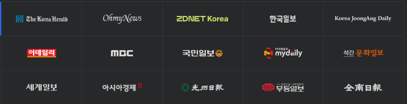

<!DOCTYPE html>
<!-- saved from url=(0032)http://127.0.0.1:5500/index.html -->
<html lang="ko"><head><meta http-equiv="Content-Type" content="text/html; charset=UTF-8">
  
  <meta http-equiv="X-UA-Compatible" content="IE=edge">
  <meta name="viewport" content="width=device-width, initial-scale=1.0">
  <title>image map</title>
  <link rel="stylesheet" href="./index_files/index.css">
  <script src="./index_files/jquery-3.7.0.min.js.다운로드"></script>
  <script src="./index_files/index.js.다운로드"></script>
</head>

<body>

  <!-- 
  <map name="mbc">
    <area shape="rect" coords="134,61,263,113" href="https://newsstand.naver.com/?list&pcode=214" alt="" title="mbc">
  </map> -->

  
  <map name="news">
    <area shape="circle" coords="200,86,30" href="https://newsstand.naver.com/?list&amp;pcode=214" alt="NEWS-MBC" title="news-mbc">
    <area shape="circle" coords="327,89,30" href="https://newsstand.naver.com/?list&amp;pcode=005" alt="NEWS-GM" title="news-mbc">
    <area shape="circle" coords="459,86,30" href="https://newsstand.naver.com/?list&amp;pcode=117" alt="NEWS-MYDEL" title="NEWS-MYDEL">
  </map>

<!--
  사각형 좌표
  좌측 상단 X, Y 좌표
  우측 하단 X, Y 좌표 
  ex) 25,25,25,25
  
  원형 좌표
  원의 중심 X, Y 좌표
  원의 반지름 길이
  ex) 25,25,5

  img map generator 사용하면 쉬움
-->

<!-- Code injected by live-server -->
<script>
	// <![CDATA[  <-- For SVG support
	if ('WebSocket' in window) {
		(function () {
			function refreshCSS() {
				var sheets = [].slice.call(document.getElementsByTagName("link"));
				var head = document.getElementsByTagName("head")[0];
				for (var i = 0; i < sheets.length; ++i) {
					var elem = sheets[i];
					var parent = elem.parentElement || head;
					parent.removeChild(elem);
					var rel = elem.rel;
					if (elem.href && typeof rel != "string" || rel.length == 0 || rel.toLowerCase() == "stylesheet") {
						var url = elem.href.replace(/(&|\?)_cacheOverride=\d+/, '');
						elem.href = url + (url.indexOf('?') >= 0 ? '&' : '?') + '_cacheOverride=' + (new Date().valueOf());
					}
					parent.appendChild(elem);
				}
			}
			var protocol = window.location.protocol === 'http:' ? 'ws://' : 'wss://';
			var address = protocol + window.location.host + window.location.pathname + '/ws';
			var socket = new WebSocket(address);
			socket.onmessage = function (msg) {
				if (msg.data == 'reload') window.location.reload();
				else if (msg.data == 'refreshcss') refreshCSS();
			};
			if (sessionStorage && !sessionStorage.getItem('IsThisFirstTime_Log_From_LiveServer')) {
				console.log('Live reload enabled.');
				sessionStorage.setItem('IsThisFirstTime_Log_From_LiveServer', true);
			}
		})();
	}
	else {
		console.error('Upgrade your browser. This Browser is NOT supported WebSocket for Live-Reloading.');
	}
	// ]]>
</script>


</body></html>